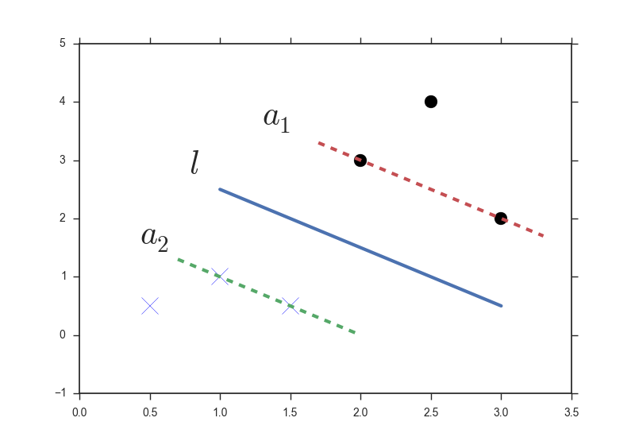
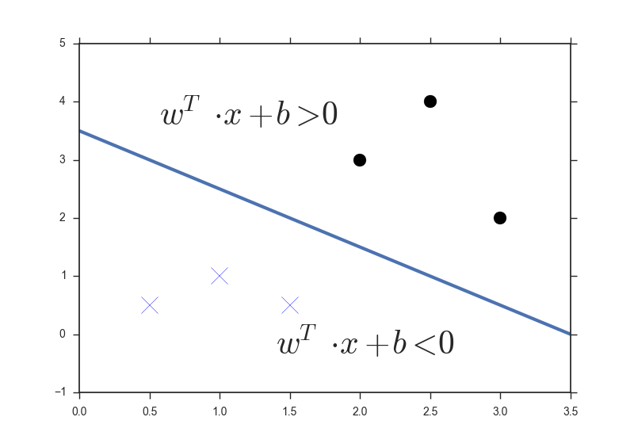
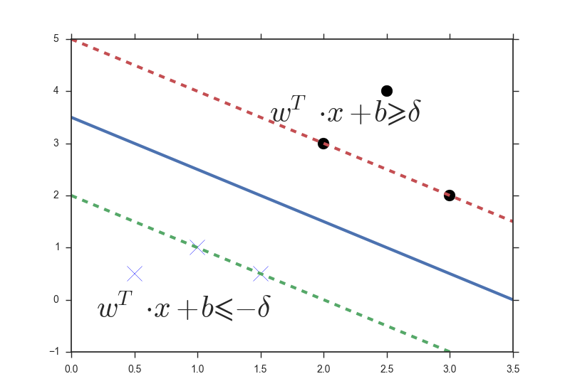
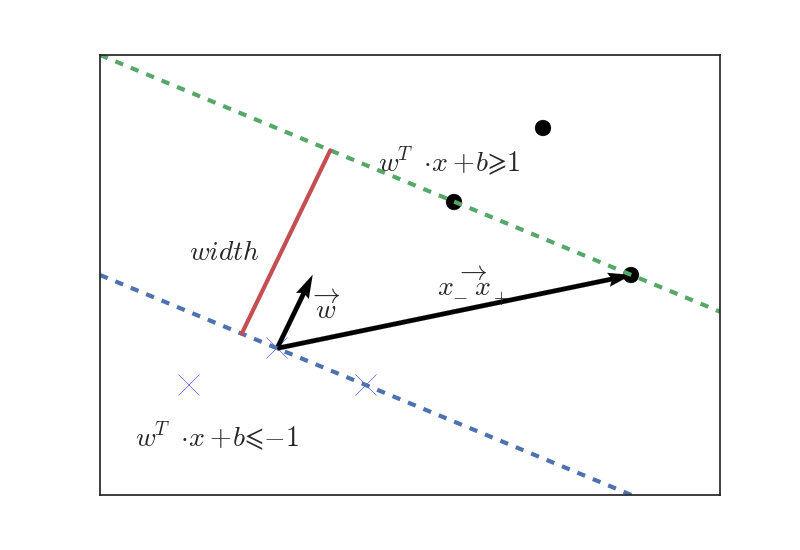

众所周知 SVM 是非常强大的一种分类算法，有着媲美神经网络的分类效果，实现过程却简单得多。这篇文章不会系统地介绍 SVM（因为我并不是线性代数、凸优化等方面的专家），而是以一个学习者的角度描述 SVM 产生的过程，由于内容较长，将会分成三篇文章。
1. 一个好的分类是怎么样的
图中的两组数据，显然它们是线性可分（linear separable）的，图里给出的三条分界线都可以准确区分这两类数据，它们是不是一样好？如果不是，哪一条看起来更加合适？

直觉告诉我们是 a。相比之下，b 和 c 离个别点太近了，我们很难拍着胸脯说“这个点在分界线下面，所以绝对是 X”，因为分界线稍微挪一挪就可以改变这些点的属性，我们想要的是一个相对自信的分界线，使靠近分界线的点与分界线的距离足够大，上图中的分界线 a 就符合我们的需求。
接下来我们画出 a 的两条平行线，距离分界线 a 最近的点（两种点都有）会落在这两条平行线上，而我们的分界线 \(l\) 就在 \(a_1\) 和 \(a_2\) 中间，这三条线看起来就像一条公路，这条路把不同的点分隔在路的两旁， \(a_1\) 和 \(a_2\) 之间的距离就是路宽，分类的过程就好比在这块地上修一条公路把不同类型的点分开，并且这条路越宽越好， SVM 要做的就是建好这条最宽的路。
PS. 这里所说的分界线严格来说是 decision boundary，decision boundary 在二维空间是一条线，在三维空间是一个平面，更高维的空间里称作超平面，为了方便本文都用分界线来代表 decision boundary。
2. 进入向量的世界
你或许已经注意到 SVM 的全称是 Support Vector Machine（支持向量机），在推导 SVM 公式过程中，我们几乎都是在和向量打交道。刚接触 SVM 的时候我对这个名字非常诧异，SVM 很强是没错，但是名字也太「随意」了吧？希望写完这篇文章以后我能理解为什么这种算法叫做支持向量机。
如果你之前没有接触过向量，建议花一个小时左右的时间熟悉一下向量的概念和基本性质。我们先把空间上的点用向量来表示（以原点为起点的向量）：
\[ \vec{x^{(i)}}\in \mathbb{R}^n, i=1,2...m \]
\(m\) 指的是点的数量，\(\mathbb{R}^n\) 表示的是 \(n\) 维空间，分界线可以用下式来表示：
\[ \vec{w^T} \cdot {\overrightarrow{x}}+b=0 \]
出于美观和方便的考虑，我倾向于去掉箭头符号，在心里记住 \(w,x\) 都是向量，\(b\) 是常数：
\[ w^T \cdot x+b=0 \]
虽然写成了向量的形式，其实并没有什么大不了的，我们可以把它和初中时候学过的直线表达式联系起来：
$$ \[\begin{split} w^T \cdot x+b&=0\\ \begin{bmatrix}w_1 & w_2\end{bmatrix}\cdot \begin{bmatrix}x_1\\x_2\end{bmatrix}+b&=0\\ w_1x_1+w_2x_2+b&=0\\ x_2=-\frac{w_1}{w_2}x_1&-b\quad\dots \quad (w_2\neq0) \end{split}\]$$
显然向量的形式更加简洁，特别是在高维空间的情况下，还有一个好处就是，矢量的形式下 \(w\) 刚好与分界线垂直，这个性质会在后面用到。\(w^T \cdot x+b=0\) 表示的是分界线上所有的点，当 \(w^T \cdot x+b>0\) 时，表示的是分界线上方的区域，反之则是分界线下方的区域： 
对于 SVM 来说仅仅这样是不够的，还记得吗我们要修一条路出来，我们得确保在一条足够宽的路里面没有数据点： 
我又把路画上去了，因为两条排水渠（暂且把路的两边叫做排水渠吧）与分界线等距，就相当于在分界线的表达式里加上/减去同样的截距 \(\delta\)，实际上引入新的变量 \(\delta\) 是没有必要的，因为 \(b\pm\delta\) 也仅仅表示截距而已，不妨把 \(\delta\) 换成1（换成2,3,4…都可以，换成1更方便，仅此而已），现在我们有了新的判别条件：
\[ \begin{cases}w^T \cdot x+b\geqslant1\quad\dots\bigcirc \\ w^T \cdot x+b\leqslant-1\ \dots \times\end{cases} \]
数学总是追求简洁的形式，在这里引入 \(y^{(i)}\)，表示的是对象的属性：
\[ \begin{equation} y^{(i)}= \begin{cases} \ \ \ 1,\quad x^{(i)}=\bigcirc\\ -1,\quad x^{(i)}=\times \end{cases} \end{equation} \]
这样前面的式子就可以写成更为简洁的形式： \[ y^{(i)}(w^T \cdot x^{(i)}+b)\geqslant1 \] ps. 要证明 \(w\) 与分界线垂直，只需要将 \(w\) 与分界线的方向向量相乘即可：
\[ \begin{split} \vec{w}\cdot\vec{k}&=w^T\cdot k\\ &=\begin{bmatrix}w_1 & w_2\end{bmatrix}\cdot \begin{bmatrix}1\\-\frac{w_1}{w_2}\end{bmatrix}\\ &=w_1-w_1\\ &=0\\ \end{split} \]
3. 什么是支持向量
通过上面一节，我们得到了一个限制条件：\(y^{(i)}(w^T \cdot x^{(i)}+b)\geqslant1\) ，这是我们修路时要遵循的原则，以此为依据修一条尽可能宽的路！那么路宽该怎么表示？
 在两条排水渠上各取一点 \((x_-, x_+)\) 连接成向量 \(\overrightarrow{x_-x_+}\) ，根据向量的知识求得路宽并不难，只需将 \(\overrightarrow{x_-x_+}\) 投影到分界线的单位法向量即可，在第二节里我们已经知道 \(w\) 与分界线垂直，容易得到：
\[ \begin{split} width &=\overrightarrow{x_-x_+}\cdot \frac{\vec{w}}{||\vec{w}||}\\ &=\frac{1}{||\vec{w}||}[w^T\cdot(x_+-x_-)]\\ &=\frac{1}{||\vec{w}||}[w^T\cdot x_+-w^T\cdot x_-]\\ &=\frac{1}{||\vec{w}||}[1-b-(-1-b)]\\ &=\frac{2}{||\vec{w}||} \end{split} \]
我们发现路宽的表达式仅与\(||w||\) （ \(w\) 的长度）有关，要让修的路最宽，意味着\(||w||\) 要最小，即 \(\frac{1}{2}||w||^2\) 最小（为了后续公式推导方便），让我们明确一下新的目标：
在限制条件 \(y^{(i)}(w^T \cdot x^{(i)}+b)\geqslant1\) 下，找到合适的参数 \((w, b)\) 使 \(\frac{1}{2}||w||^2\) 最小
这是一个基于 KKT 条件的二次规划问题，优化原理的内容超出了这篇文章的范畴，如果有兴趣可以参考凸优化的教材，在这里我们只要知道拉格朗日乘数法可以求得这个最优解，引入新的系数 $_i $:
\[ \begin{equation} \alpha_{i}= \begin{cases} \ \ \ 0,\quad\quad\quad \quad y^{(i)}(w^T \cdot x^{(i)}+b)>1\\ \geqslant0, \quad\quad\ \ \ \quad y^{(i)}(w^T \cdot x^{(i)}+b)=1 \end{cases} \end{equation} \]
这样问题转化成选取合适的参数 \(\alpha\) 最小化 \(\mathcal{L}\) :
\[ min \ \mathcal{L}=\frac{1}{2}||w||^2-\sum_{k=1}^m\alpha_i[y^{(i)}(w^T \cdot x^{(i)}+b)-1]\\ \sum_{k=1}^m\alpha_i[y^{(i)}(w^T \cdot x^{(i)}+b)-1]=0 \]
即使你完全不知道凸优化和拉格朗日乘数法也没有关系，你可以试着这么理解，\(\mathcal{L}\) 和原来的目标是一致的，因为 \(\sum=0\) ，同时我们又把限制条件加入到了表达式当中，接下来分别对 \(w\) 和 \(b\) 求偏导数：
\[ \frac{\partial \mathcal{L}}{\partial b} = -\sum_{k=1}^m\alpha_iy^{(i)}\\ \frac{\partial \mathcal{L}}{\partial w} =w -\sum_{k=1}^m\alpha_iy^{(i)}x^{(i)}\\ \]
令以上两式为0，我们可以得到：
\[ \begin{split} \sum_{k=1}^m\alpha_iy^{(i)}=0\\ w =\sum_{k=1}^m\alpha_iy^{(i)}x^{(i)}\\ \end{split} \]
因为 \(\alpha _i\) 只有当 \(y^{(i)}(w^T \cdot x^{(i)}+b)=1\) 时（位于排水渠上的点）才能取到非零的值，所以 \(w\) 只依赖于边界上的矢量，换句话说，正是位于边界上的这些向量支撑起了分界线（超平面），所以这些向量被叫做支持向量，这也是支持向量机名字的由来。
ps. 关于 KKT 条件下的二次规划问题，有兴趣的同学可以参阅这篇文章。